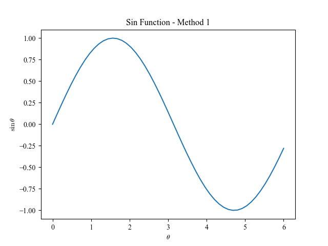

python matplotlib 画图小技巧: 自定义字体
问题
在用 matplotlib 画图时, 使用自定义字体. 比如从一个下载好的 .ttf 字体文件加载,
或者在程序无法找到系统中的字体时, 指定字体文件的位置.
Method 1
import numpy as np
import matplotlib.pyplot as plt
from matplotlib import font_manager
fe = font_manager.FontEntry(fname='/usr/share/fonts/TTF/Times.TTF', name='tnr')
font_manager.fontManager.ttflist.append(fe)
plt.rcParams['font.family'] = fe.name
plt.rcParams['mathtext.fontset'] = 'cm'
x = np.linspace(0, 6, 51)
plt.plot(x, np.sin(x))
plt.title(r'Sin Function - Method 1')
plt.xlabel(r'$\theta$')
plt.ylabel(r'$\sin\theta$')
plt.savefig('method1.png')Method 2
import numpy as np
import matplotlib.pyplot as plt
from matplotlib import font_manager
font_path = '/usr/share/fonts/TTF/Times.TTF' # Your font path goes here
font_manager.fontManager.addfont(font_path)
prop = font_manager.FontProperties(fname=font_path)
plt.rcParams['font.family'] = prop.get_name()
plt.rcParams['mathtext.fontset'] = 'cm' # 'cm' (Computer Modern)
x = np.linspace(0, 6, 51)
plt.plot(x, np.sin(x))
plt.title(r'Sin Function - Method 2')
plt.xlabel(r'$\theta$')
plt.ylabel(r'$\sin\theta$')
plt.savefig('method2.png')Result
